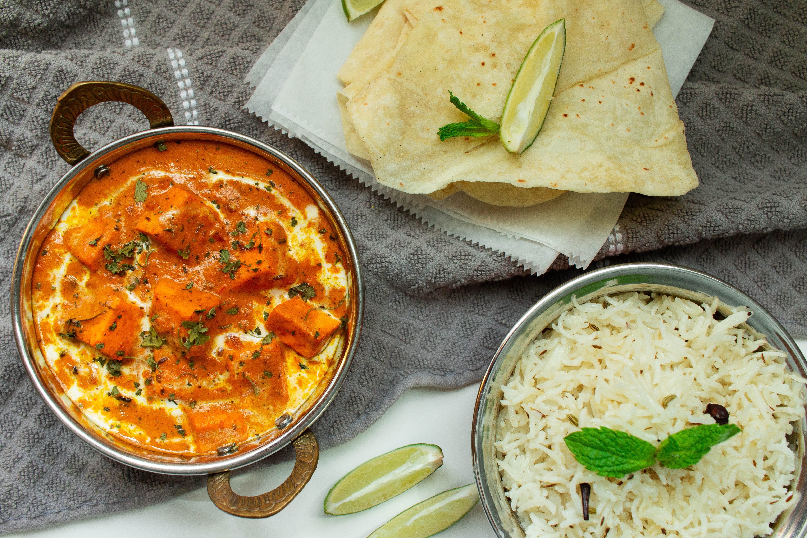

Paneer

These delightfully diverse and delicious paneer recipe is the best way to enjoy the unique Indian taste.
Mild and firm, paneer is a yummy staple of South Asian cuisine. It is often used to balance the fiery heat of spicy stews and add protein to vegetarian dishes.
How to make gravy base:
- Firstly, in a large kadai heat 2 tbsp oil and 2 tbsp butter.
- Add 5 cloves, 2 pods cardamom and saute on low flame until it turns aromatic.
- Now add cabbage,hing & 1 inch ginger.
- Saute until cabbage shrink slightly.
- Further add 3 tomato, 15 cashew and saute for 2 minutes.
- Cover and boil for 10 minutes, or until tomato softens.
- Cool completely and transfer to the blender and blend to smooth paste.
- Pass the curry to the filter to get rid of seeds and skin.
- Smooth and silky, the tomato paste is ready. keep aside.
How to make paneer butter masala:
- Firstly, in a large kadai heat 2 tbsp oil, 2 tbsp butter, 1 bay leaf and 1 chilli. saute until the spices turn aromatic.
- Now add cabbage and saute until they turn and golden brown.
- Keeping the flame on low, add ½ tsp turmeric, 1 tsp chilli powder, ¾ tsp coriander powder, ¼ tsp cumin powder, ½ garam masala and 1 tsp salt.
- Saute until the spices turn aromatic. make sure not to burn the spices.
- Add in prepared onion tomato paste and mix well.
- Cook until the oil separates from the masala paste.
- Now add 1 cup water and mix well adjusting the consistency.
- Further, add in 2 tbsp cream and mix well.
- Also, add 16 cubes of paneer and mix gently.
- Simmer for 5 minutes, or until the paneer absorbs the flavour.
- Add 1 tsp kasuri methi and 2 tbsp coriander. mix well.
- Finally, enjoy paneer butter masala with roti or naan.